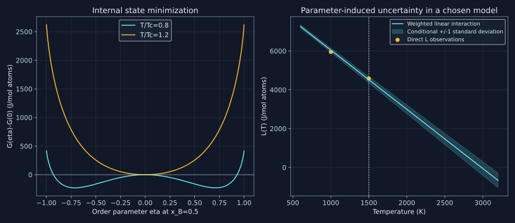

18. Sublattice models, assessment and compatible databases
A thermodynamic model is a space of allowed states before it is a list of fitted numbers. Sublattices specify which sites can exchange species; internal minimization chooses their populations; an assessment constrains the remaining energetic coefficients. Database compilation then has to preserve those definitions across every subsystem. Agreement with a few binary phase boundaries is only one part of that task.
18.1 A smooth composition curve does not reveal its internal states
Lesson 41, 3:24–21:21. Topic span; mathematical constructions and numerical examples are explicitly original extensions.
A substitutional solution can often be represented with one sublattice occupied by several elements, ideal configurational mixing and Redlich–Kister excess terms. Such an energy can describe the equilibrium composition dependence accurately without explicitly exposing chemical order. An ordered compound, a disordered solution and a mechanically different structure cannot be distinguished merely because their plotted curves have different names.
Order introduces internal populations. A sublattice model assigns a set of allowed constituents to each kind of site and defines the relative numbers of those sites. Site fractions $y_i^{(s)}$ satisfy $y_i^{(s)}\ge0$ and $\sum_i y_i^{(s)}=1$ on each sublattice. They are not generally overall atomic mole fractions. Crystallographic information guides which sites can reasonably be grouped; the general mathematical formalism does not infer a structure from an arbitrary polynomial.
For a vacancy-free model with $a_s$ sites of type s per formula unit and monoatomic constituents, the number of atoms of element i is $n_i=\sum_s a_s y_i^{(s)}$. Divide by $n_{\rm at}=\sum_s a_s$ to obtain its overall atomic fraction. If constituents include vacancies or multiatom/charged species, count actual elemental stoichiometry instead and enforce any charge constraints. A vacant site contributes no atom to the denominator.
In the simple two-sublattice model $(A,B)_{1/2}(A,B)_{1/2}$, let y and z be B site fractions. Then $x_B=(y+z)/2$. At $x_B=1/2$, both y=z=1/2 and y=0,z=1 have the same overall composition. The former is disordered with respect to these equivalent sublattices; the latter is perfectly ordered. An overall composition alone cannot distinguish them.
A database phase name such as an order–disorder model label may cover both ordered and disordered branches. Inspect its constitution and model definition, rather than infer ordering from its name or a numerical composition-set suffix. Equal populations are the disordered condition only for the relevant equivalent-sublattice model; inequivalent crystallographic sites can have different populations without representing the same symmetry-breaking transition.
18.2 End members, entropy and normalization in the compound energy formalism
Lesson 42, 0:43–12:41. Topic span; mathematical constructions and numerical examples are explicitly original extensions.
For a specified formula-unit basis, a representative compound-energy-formalism expression is
$$g(T,\mathbf y)=\sum_P\left(\prod_s y_{P_s}^{(s)}\right)g_P^\circ(T) +RT\sum_s a_s\sum_i y_i^{(s)}\ln y_i^{(s)} +g^{\rm ex}(T,\mathbf y)+g^{\rm phys}(T,\mathbf y).$$An end-member array P selects one species on each sublattice; colons separate sublattices. For two binary sublattices the arrays are A:A, A:B, B:A and B:B. An end member is a limiting occupancy state of the model, not necessarily an experimentally stable compound. It can be stable, metastable or mechanically hypothetical. The lecture's blanket statement that pure-element end members in such a model can never be real is too strong.
The product weights sum to one because each sublattice's site fractions sum to one. Their number is the product of constituent counts: five binary sublattices have 32 end members; five sublattices with four constituents each have 1024. This combinatorial growth makes data availability and extrapolation serious concerns. Small product weights alone do not prove excess interactions negligible: a sufficiently large energetic coefficient can outweigh a smaller prefactor.
The configurational term follows by counting random occupations independently within each sublattice and applying the large-number entropy limit. Its multiplicities and amount basis must match the end-member energies. It describes that mean-field randomness; it does not capture every correlation between nearby sites. End-member energies also need one common elemental reference convention across competing phases.
The primary formalism discussion in Dupin and colleagues (2018), pp.1–4 explicitly allows stable, metastable and hypothetical end members and describes the cost of simplified sublattice choices. Those four PDF pages were read, including its sigma-phase site table. The full effective-bond implementation and later numerical examples were not reproduced here.
18.3 A complete two-sublattice ordering calculation
Lesson 41, 5:43–11:33. Topic span; mathematical constructions and numerical examples are explicitly original extensions.
Define an original symmetric model per mole atoms:
$$g(y,z)=-\Omega[y(1-z)+(1-y)z]+\frac{RT}{2}[q(y)+q(z)], \qquad q(u)=u\ln u+(1-u)\ln(1-u).$$The limiting convention is $0\ln0=0$. Positive $\Omega$ favors unlike occupation across the sublattices. At equiatomic composition, set $y=(1-\eta)/2$ and $z=(1+\eta)/2$, with $-1\le\eta\le1$. Then
$$g(\eta)=-\frac{\Omega}{2}(1+\eta^2)+RTq[(1+\eta)/2].$$Its derivatives are
$$g'(\eta)=-\Omega\eta+\frac{RT}{2}\ln\frac{1+\eta}{1-\eta},\qquad g''(0)=RT-\Omega.$$The disordered branch is locally stable above $T_c=\Omega/R$ and loses stability below it. To check the nonzero stationary branches, rewrite their equation as $\operatorname{atanh}\eta/\eta=\Omega/(RT)$. For $0<\eta<1$, the left side increases from one to infinity, so exactly one positive root exists below $T_c$, with an equivalent negative partner. The derivative changes from negative to positive across that root; comparison with zero and the endpoints establishes the ordered minima.
With $\Omega=8000$ J/mol atoms, $T_c=962.178840$ K. At $T/T_c=0.8$, the program finds $\eta=0.710411783$, y=0.144794108 and z=0.855205892. The ordered energy lies 229.456096 J/mol below the disordered state. The two signs of eta correspond to exchanging equivalent sublattice labels, not two different overall compositions.
Away from equiatomic composition, the constraint gives $y=x-\eta/2$, $z=x+\eta/2$ and $|\eta|\le2\min(x,1-x)$. Ignoring this bound allows negative site fractions. Minimizing internal populations yields a homogeneous phase energy $g_{\rm hom}(T,x)=\min_{\mathbf y\to x}g(T,\mathbf y)$. If its composition dependence is nonconvex, the specimen may still lower its energy by separating into different compositions. Internal order minimization and the subsequent common-tangent/global equilibrium calculation are distinct operations.
For a differentiable interior minimum under temperature-independent composition constraints, the envelope derivative with respect to T equals the explicit partial derivative of g at the minimizing populations. Stationarity cancels the population-derivative contribution. At a branch change, one must examine the relevant one-sided derivatives. This is why derivatives of a minimized energy must respect its active branch.
18.4 Vacancies are sites in a model, not atoms in a composition
Lesson 42, 14:49–21:26. Topic span; mathematical constructions and numerical examples are explicitly original extensions.
Consider $(\mathrm{Fe})_1(\mathrm C,\mathrm{Va})_3$ with carbon site fraction 0.1. Per formula unit it contains one Fe atom, 0.3 C atoms and 2.7 vacant interstitial sites. Its carbon atomic fraction is
$$x_C=\frac{3(0.1)}{1+3(0.1)}=0.230769231.$$Counting all four sites as atoms would instead give 0.075 and would be wrong. The ideal configurational entropy is $-3Rq(0.1)=8.108671$ J/(mol formula K). Divide by 1.3 real atoms per formula to obtain 6.237439 J/(mol atoms K). Multiplying a formula-unit energy by the wrong molar amount produces the same kind of normalization error.
The 1:3 interstitial multiplicity is a structure-dependent choice, not a universal rule derived from four tetrahedral cells around every atom. For the conventional bcc cell, six octahedral sites per two host atoms give three per host atom; the fcc cell has four octahedral sites per four host atoms, giving one. Föll's university crystallography notes show the cell-site count. A model can group sites or impose restrictions, so the adopted multiplicity must be stated.
A sublattice allowing only vacancy has site fraction one for that sole species and contributes $1\ln1=0$ to ideal configurational entropy. Adding such a bookkeeping sublattice does not by itself create vacancy mixing entropy. When real atoms and vacancies can share it, changing their populations does create configurational possibilities. Whether a vacancy is substitutional or interstitial, and whether its population can vary, must be read from the model.
For complex phases, Wyckoff multiplicities and site occupancies can motivate five or more sublattices. Combining inequivalent sites reduces parameter count and computation but can lose site-preference information. The sigma-phase example in the primary table has five distinct sites with multiplicities summing to 30; a reduced three-sublattice model and a full five-sublattice model need not have identical extrapolation behavior merely because both reproduce one binary dataset.
18.5 Short-range order requires another state description
Lesson 42, 21:28–24:34. Topic span; mathematical constructions and numerical examples are explicitly original extensions.
Long-range order is not the only departure from a random solution. A liquid can favor certain neighbors without periodic sublattice order. Associate models introduce additional species; quasichemical models describe pair or larger local configurations subject to their own counting and conservation constraints. A Redlich–Kister curve can represent an effective energy shape, but an explicit correlation model can carry different physical state variables and extrapolation assumptions.
For an original ideal associated solution, let A+B react to AB. Normalize total elemental amounts to 0.5 mole A atoms and 0.5 mole B atoms. If z moles associates form, the species amounts are $n_A=n_B=0.5-z$, $n_{AB}=z$ and total molecular/species amount is $1-z$. The overall atomic fraction of B stays 0.5, while the AB species fraction is $z/(1-z)$.
Minimizing $\sum_i n_i\mu_i^\circ+RT\sum_i n_i\ln y_i$ along this reaction gives $\mu_{AB}-\mu_A-\mu_B=0$. With ideal species activities,
$$K=\frac{y_{AB}}{y_Ay_B}=\frac{z(1-z)}{(0.5-z)^2}.$$For stipulated K=9, the physical root is $z=[1-1/\sqrt{10}]/2=0.341886117$, giving $y_{AB}=0.519493853$. Elemental conservation is exact. A species fraction above one half here does not imply more than one half of the atoms are B.
This example shows the counting, not evidence that every alloy liquid contains persistent AB molecules. An associate can be a useful effective species; its physical interpretation requires independent evidence. Similarly, ionic models require charge balance and careful constituent conventions. A model's ability to make a deep energy minimum does not alone validate its microscopic interpretation.
18.6 Fit observations through their actual equilibrium constraints
Lesson 43, 1:54–17:12. Topic span; mathematical constructions and numerical examples are explicitly original extensions.
The optimization lectures distinguish measured dependent quantities from imposed experimental conditions. For an equilibrated tie line, temperature and pressure may be controlled and the phase compositions observed. For a thermal transformation at known alloy composition, the transition temperature is an observable. If both axes have appreciable uncertainty, treating one as exact is an additional statistical approximation; a measurement model or errors-in-variables treatment may be needed.
A forward calculation must reproduce the experimental state definition. Fitting a measured alpha–beta equilibrium can involve a constrained two-phase calculation while other phases are suspended. Its success does not prove that the fitted alpha–beta pair is globally stable when all competitors are restored. The final assessment must check the unrestricted equilibrium envelope and reasonable metastable behavior too.
Phase-equilibrium data can leave common energy shifts and poorly sampled energy shapes underconstrained. Adding a composition-affine function shared by all phases leaves their equilibrium common tangents unchanged after the corresponding reference shift. Other changes confined to unobserved states can also be invisible. Thermochemical data supply complementary constraints, as Chapter 17 demonstrated, but do not automatically make every chosen parameter inferable.
For ordinary independent Gaussian observation errors with known standard uncertainties $u_i$, define our objective convention as
$$\chi^2(\theta)=\sum_i\lambda_i \left[\frac{F_i(\theta)-d_i}{u_i}\right]^2.$$The nonnegative $\lambda_i$ here are explicit extra preference factors, with one meaning no extra preference and zero excluding a datum from that stage. If software instead multiplies a residual by a weight before squaring it, its effective objective factor is the square of that weight. The exact convention must be checked before interpreting “weight two.” Preference weighting and a measured standard uncertainty are different objects.
Correlated measurements require a covariance matrix, giving $\mathbf r^T\Sigma^{-1}\mathbf r$ after appropriate modeling. Changing weights to compensate for many correlated points does not automatically reproduce this likelihood. Nor should a difficult-to-fit observation simply be declared erroneous: incompatible references, an inadequate phase model or a missing transformation can be responsible.
18.7 Solve a small assessment exactly before trusting a large optimizer
Lesson 44, 1:35–5:23. Topic span; mathematical constructions and numerical examples are explicitly original extensions.
Use the centered interaction $L(T)=A+B(T-1000)$ and three synthetic observations, all in J/mol atoms except the slope parameter's kelvin denominator. The first is normalized excess enthalpy, the second and third are interaction values inferred under stated reference/model assumptions:
| Observation | Forward map | Measured value | Known standard uncertainty |
|---|---|---|---|
| Normalized enthalpy | A−1000B | 9100 | 100 |
| L at 1000 K | A | 5950 | 200 |
| L at 1500 K | A+500B | 4580 | 200 |
The enthalpy expression follows from $L-TL_T=A-1000B$, not from substituting temperature into L. Let X have rows $(1,-1000)$, $(1,0)$ and $(1,500)$, and $W=\operatorname{diag}(1/u_i^2)$. Differentiating the quadratic objective gives
$$X^TWX\,\hat\theta=X^TW\mathbf d,\qquad \hat\theta=(X^TWX)^{-1}X^TW\mathbf d.$$The inverse exists because the weighted design has rank two. In substantial problems, QR or SVD is preferable to forming normal equations directly, whose condition number squares that of the whitened design. The explicit two-by-two inverse here is a transparent arithmetic demonstration.
The fitted values are A=6042.830189 J/mol, B=−3.049433962 J/(mol K), with $\chi^2=0.317169811$. The program independently checks the weighted residual gradient is zero. There is one residual degree of freedom. A small objective is not by itself proof that the model is correct: overstated measurement uncertainties or chance scatter can also produce it.
With correctly specified independent Gaussian errors and this linear model, the parameter covariance is exactly $C=(X^TWX)^{-1}$. Its standard deviations are 113.270423 J/mol for A and 0.134585317 J/(mol K) for B, with correlation 0.693103280. These are conditional on the stipulated noise and model. They are not multiplied by a fitted residual variance because the uncertainties were already specified as known.
A prediction at T uses $v=(1,T-1000)$, giving mean $v\hat\theta$ and variance $vCv^T$. At 1000, 1500 and 3000 K, the program gives standard uncertainties 113.270423, 167.106338 and 357.137466 J/mol. Extrapolation expands this parameter-induced uncertainty. It still omits uncertainty about the linear temperature form, missing phases and reference descriptions.

18.8 Staged fitting, uncertainty and the stopping decision
Lesson 43, 17:12–25:11. Topic span; mathematical constructions and numerical examples are explicitly original extensions.
The recorded Ag–Cu workflow first fits liquid enthalpy-related variables, then adds phase-equilibrium observations and additional variables, revises a constrained parameter, inspects the resulting diagram and saves the optimized description. Its prepared macro encodes earlier human choices. The displayed residual reduction is evidence of that recorded demonstration, not a rerun of its database here.
A useful staged procedure starts with a few identifiable terms, establishes feasible forward calculations, then releases additional terms as evidence supports them. Staging is an initialization strategy, not a theorem that the final joint optimum has been reached. Freezing early parameters forever can hide their later correlations. A final joint check, multiple physically reasonable starts and sensitivity to weighting decisions can expose this.
Parameter scaling matters: A and B have different units and numerical scales. An unscaled penalty on $A^2+B^2$ is not a meaningful coordinate-independent prior. If regularization is used, state the parameter scales or prior covariance that define it. Relative parameter uncertainty also becomes misleading when the fitted value is near zero; a ratio with a vanishing denominator is not a universal reason to delete a physical term.
Bocklund and colleagues' ESPEI paper (2019), pp.1–8 describes a linear thermochemical parameter-generation stage and Bayesian refinement using multiphase data. Those actual pages were read. No ESPEI or MCMC calculation was run here. Our closed-form Gaussian covariance is a small transparent special case, not a reproduction of the paper's Cu–Mg assessment.
Bayesian inference expresses $p(\theta\mid D)\propto p(D\mid\theta)p(\theta)$. A prior can regularize an underconstrained problem, but information supplied by the prior must not be attributed to the observations. For a full-rank linear Gaussian likelihood and a flat prior on the parameter plane, the resulting proper posterior has the mean and covariance above. Nonlinear multiphase problems can have multiple basins and discontinuous active-phase changes. An MCMC run needs diagnostics of exploration and mixing; a low residual or a fixed iteration count is not a posterior-convergence certificate.
Finish an assessment only after checking residual patterns by data source, parameter sensitivity and covariance, withheld or newly acquired evidence, phase topology, thermochemical derivatives and extrapolation beyond the fitted domain. A broad residual structure can reveal a missing model term rather than random noise. Validation at a new composition tests a prediction more directly than refitting and redisplaying the original points.
18.9 A database merge is a model-consistency problem
Lesson 45, 1:10–17:20. Topic span; mathematical constructions and numerical examples are explicitly original extensions.
For four components, there are six binary and four ternary subsystems. Their assessment outputs can provide building blocks, but counting them does not prove a reliable quaternary description. Pure-element functions, magnetic/reference conventions, temperature intervals and the phase models shared by those subsystems must agree.
Isostructural phases share a structural type; they need not form one continuous stable solution field. A miscibility gap can separate compositions within the same structural model, while two compounds with a similar stoichiometric formula can have different structures. Matching names or chemical formulas is therefore insufficient. Align site multiplicities, constituent sets, parameter symmetries and the intended disordered limit before combining descriptions.
For a partitioned order–disorder description, one useful abstract construction is
$$g(\mathbf y)=g_{\rm dis}(x)+g_{\rm ord}(\mathbf y)-g_{\rm ord}(\mathbf y_{\rm dis}(x)).$$On the disordered population surface, the last two terms cancel exactly. The construction preserves the supplied disordered branch while adding an ordering contribution. It requires a consistent composition mapping and matching model conventions; it is not a license to subtract unrelated reference functions or to double count ideal entropy.
Merging $(\mathrm{Fe},\mathrm{Cr})_1(\mathrm{Va})_1$ with $(\mathrm{Fe})_1(\mathrm C,\mathrm{Va})_1$ suggests $(\mathrm{Fe},\mathrm{Cr})_1(\mathrm C,\mathrm{Va})_1$. Its four end members include Cr:C, which neither original subsystem necessarily supplied. A hypothetical end member can sometimes be constrained by atomistic information or a justified thermodynamic construction. Setting an unknown energy to zero is a provisional assumption with physical consequences, not a neutral statement that no data exist. Software behavior for unspecified parameters must be checked rather than universally assumed.
There is an even sharper extrapolation ambiguity. Add to a quaternary phase an energy term
$$\Delta g=\Lambda x_Ax_Bx_Cx_D.$$It vanishes on every binary and ternary boundary. Consequently even exact agreement with all those boundary data cannot identify Lambda. At the equimolar interior and $\Lambda=-10^6$ J/mol atoms, it shifts the phase by −3906.25 J/mol atoms. This is a mathematical counterexample to treating lower-order completeness as a guarantee of unique higher-order prediction. It does not say such a large term belongs in a real alloy; it shows what those observations cannot exclude.
As a bounded contemporary direction, the 2026 preprint by Richter and colleagues reports systematic comparison of pure-element descriptions and uncertainty quantification for 41 elements. Only its complete abstract was read; its 61-page methods/results and released artifacts were not audited or reproduced. The practical connection is that changing the unary foundation can require reassessing dependent binary and higher-order descriptions, rather than merging new functions without validation.
18.10 Execute the state and assessment checks
Download the complete program and run python code/ch18_models_and_assessment.py from this project directory. It checks the ordered minima, composition/entropy normalization, associate conservation, weighted optimum, covariance propagation, invisible interior term and missing merged end member. Its fifteen actual output lines are reproduced below.
"""Original CEF, association and weighted-assessment examples; no asses\
sed alloy."""
from math import log, sqrt, isclose, comb
R = 8.31446261815324
def q(y):
return 0.0 if y in (0.0, 1.0) else y * log(y) + (1 - y) * log(1 - y)
omega = 8000.0
tc = omega / R
t = 0.8 * tc
def g_order(eta):
y = (1 - eta) / 2
z = (1 + eta) / 2
return -omega * (y * (1 - z) + (1 - y) * z) + R * t * (q(y) + q(z)) / 2
lo, hi = 1e-10, 1 - 1e-12
for _ in range(100):
eta = (lo + hi) / 2
derivative = -omega * eta + R * t * log((1 + eta) / (1 - eta)) / 2
if derivative > 0:
hi = eta
else:
lo = eta
eta = (lo + hi) / 2
assert g_order(eta) < g_order(0) and isclose(
g_order(eta), g_order(-eta), abs_tol=1e-8
)
print(
(
f"Symmetric two-sublattice toy: Tc="
f"{tc:.6f}"
f" K; T/Tc=0.8, order parameter="
f"{eta:.9f}"
)
)
print(
(
f"Sites at x_B=0.5: y_B1="
f"{(1 - eta) / 2:.9f}"
f", y_B2="
f"{(1 + eta) / 2:.9f}"
f"; ordered-minus-disordered G="
f"{g_order(eta) - g_order(0):.6f}"
f" J/mol atoms"
)
)
# Interstitial composition: vacancies count sites, not atoms.
yc = 0.1
nc = 3 * yc
nfe = 1.0
xc = nc / (nc + nfe)
sformula = -3 * R * q(yc)
print(
(
f"(Fe)1(C,Va)3 at y_C=0.1: x_C="
f"{xc:.9f}"
f"; entropy="
f"{sformula:.6f}"
f" J/(mol formula K)"
)
)
print(
(
f"Same entropy per mole real atoms="
f"{sformula / (1 + nc):.6f}"
f"; vacancy-only sublattice contributes zero ideal entropy"
)
)
# Ideal associated solution A+B <-> AB, total A=B=0.5 mol atoms.
keq = 9.0
z = (1 - sqrt(1 / (1 + keq))) / 2
na = nb = 0.5 - z
nab = z
nt = na + nb + nab
assert isclose((nab / nt) / ((na / nt) * (nb / nt)), keq, abs_tol=1e-12)
assert isclose(na + nab, 0.5) and isclose(nb + nab, 0.5)
print(
(
f"Association K=9: n_AB="
f"{nab:.9f}"
f", species fraction y_AB="
f"{nab / nt:.9f}"
f", overall atomic x_B=0.500000000"
)
)
# Linearized observations for L(T)=A+B*(T-1000), with known independent
# Gaussian errors.
observations = [
("normalized enthalpy", [1.0, -1000.0], 9100.0, 100.0),
("L at 1000K", [1.0, 0.0], 5950.0, 200.0),
("L at 1500K", [1.0, 500.0], 4580.0, 200.0),
]
normal = [[0.0, 0.0], [0.0, 0.0]]
rhs = [0.0, 0.0]
for label, row, value, u in observations:
for i in range(2):
rhs[i] += row[i] * value / u**2
for j in range(2):
normal[i][j] += row[i] * row[j] / u**2
det = normal[0][0] * normal[1][1] - normal[0][1] ** 2
assert det > 0
cov = [
[normal[1][1] / det, -normal[0][1] / det],
[-normal[1][0] / det, normal[0][0] / det],
]
theta = [sum(cov[i][j] * rhs[j] for j in range(2)) for i in range(2)]
chi2 = sum(
(sum(row[i] * theta[i] for i in range(2)) - value) ** 2 / u**2
for _, row, value, u in observations
)
print(
(
f"Weighted fit: L(1000)="
f"{theta[0]:.6f}"
f" J/mol, slope="
f"{theta[1]:.9f}"
f" J/(mol K), chi2="
f"{chi2:.9f}"
)
)
print(
(
f"Known-noise covariance: u_L1000="
f"{sqrt(cov[0][0]):.6f}"
f", u_slope="
f"{sqrt(cov[1][1]):.9f}"
f", correlation="
f"{cov[0][1] / sqrt(cov[0][0] * cov[1][1]):.9f}"
)
)
for temp in (1000.0, 1500.0, 3000.0):
row = [1.0, temp - 1000.0]
pred = sum(row[i] * theta[i] for i in range(2))
variance = sum(
row[i] * cov[i][j] * row[j] for i in range(2) for j in range(2)
)
print(
(
f"Conditional model prediction T="
f"{temp:.0f}"
f" K: L="
f"{pred:.6f}"
f", standard uncertainty="
f"{sqrt(variance):.6f}"
f" J/mol"
)
)
# Check the exact weighted gradient, not only a printed optimizer status.
grad = [
sum(
row[i] * (sum(row[j] * theta[j] for j in range(2)) - value) / u**2
for _, row, value, u in observations
)
for i in range(2)
]
assert max(abs(v) for v in grad) < 1e-10
# Every binary/ternary boundary misses an interior-only quaternary term.
hidden = -1e6 * (0.25**4)
assert -1e6 * 0 * 0.2 * 0.3 * 0.5 == 0.0
print(
(
f"Quaternary-only term: zero on every lower-order boundary, equimo"
f"lar shift="
f"{hidden:.6f}"
f" J/mol atoms"
)
)
print(
(
f"Five sublattices: 2 constituents each -> "
f"{2 ** 5}"
f" end members; 4 each -> "
f"{4 ** 5}"
)
)
print(
(
f"Four components: "
f"{comb(4, 2)}"
f" binaries, "
f"{comb(4, 3)}"
f" ternaries; subsystem counts do not prove extrapolation accuracy"
)
)
known = {("FE", "VA"), ("CR", "VA"), ("FE", "C")}
all_members = {(a, b) for a in ("FE", "CR") for b in ("C", "VA")}
missing = sorted(all_members - known)
assert missing == [("CR", "C")]
print(
(
"Merged (Fe,Cr)1(C,Va)1: missing end member Cr:C must be explicitly a"
"ssessed or labeled provisional"
)
)
print(
(
"All model-constraint, weighted-gradient and balance checks PASS; no "
"MCMC or commercial Ag-Cu reproduction claimed"
)
)
Symmetric two-sublattice toy: Tc=962.178840 K; T/Tc=0.8, order parameter=0.710411783 Sites at x_B=0.5: y_B1=0.144794108, y_B2=0.855205892; ordered-minus-disordered G=-229.456096 J/mol atoms (Fe)1(C,Va)3 at y_C=0.1: x_C=0.230769231; entropy=8.108671 J/(mol formula K) Same entropy per mole real atoms=6.237439; vacancy-only sublattice contributes zero ideal entropy Association K=9: n_AB=0.341886117, species fraction y_AB=0.519493853, overall atomic x_B=0.500000000 Weighted fit: L(1000)=6042.830189 J/mol, slope=-3.049433962 J/(mol K), chi2=0.317169811 Known-noise covariance: u_L1000=113.270423, u_slope=0.134585317, correlation=0.693103280 Conditional model prediction T=1000 K: L=6042.830189, standard uncertainty=113.270423 J/mol Conditional model prediction T=1500 K: L=4518.113208, standard uncertainty=167.106338 J/mol Conditional model prediction T=3000 K: L=-56.037736, standard uncertainty=357.137466 J/mol Quaternary-only term: zero on every lower-order boundary, equimolar shift=-3906.250000 J/mol atoms Five sublattices: 2 constituents each -> 32 end members; 4 each -> 1024 Four components: 6 binaries, 4 ternaries; subsystem counts do not prove extrapolation accuracy Merged (Fe,Cr)1(C,Va)1: missing end member Cr:C must be explicitly assessed or labeled provisional All model-constraint, weighted-gradient and balance checks PASS; no MCMC or commercial Ag-Cu reproduction claimed
18.11 Problems with complete solutions
1. Same composition, different constitution
At overall x=0.4, find the allowed eta interval for two equal sublattices and give a disordered and an ordered population pair.
Solution
The populations are $y=0.4-\eta/2$ and $z=0.4+\eta/2$. Both must remain between zero and one, so $|\eta|\le2\min(0.4,0.6)=0.8$. The disordered pair is y=z=0.4. Taking eta=0.6 gives y=0.1,z=0.7, still with average 0.4. The model energy and internal minimization decide which state is preferred; overall composition alone cannot decide. Taking eta=1 would give a negative y and is inadmissible.
2. Establish the critical temperature and the ordered branch
Derive the equiatomic stationarity condition and explain the computed state at T/Tc=0.8.
Solution
Substitution into g gives $-\Omega(1+\eta^2)/2+RTq[(1+\eta)/2]$. Its first derivative is $-\Omega\eta+(RT/2)\ln[(1+\eta)/(1-\eta)]$ and curvature at zero is $RT-\Omega$. Thus $T_c=\Omega/R$. Below Tc the positive stationary point solves $\operatorname{atanh}\eta/\eta=T_c/T$. The monotonic left side has exactly one root in (0,1), and its negative partner has equal energy. At T/Tc=0.8 the program finds eta=0.710411783 and energy 229.456096 J/mol below eta=0. The zero branch is then unstable, not a competing stable homogeneous minimum.
3. Count atoms and entropy with interstitial vacancies
Explain both concentration and entropy normalizations in the 1:3 example. What is the ideal entropy of a vacancy-only sublattice?
Solution
One formula has one Fe atom and 0.3 C atoms, so $x_C=0.3/1.3=0.230769231$. The other 2.7 sites are vacant and add no atoms. The interstitial entropy is $-3R[0.1\ln0.1+0.9\ln0.9]=8.108671$ J per mole formula per kelvin, or 6.237439 per mole real atoms per kelvin. A vacancy-only sublattice has its sole site fraction equal to one and entropy contribution proportional to $-\ln1=0$. A bookkeeping vacancy sublattice is different from a variable atom–vacancy mixture.
4. A species fraction is not an elemental fraction
Derive the physical associate amount for K=9 and check elemental conservation.
Solution
The species fractions are $(0.5-z)/(1-z)$ for both A and B and $z/(1-z)$ for AB. Their activity ratio gives $K=z(1-z)/(0.5-z)^2$. For K=9, rearrangement gives $10z^2-10z+2.25=0$. The root in [0,0.5] is $(1-1/\sqrt{10})/2=0.341886117$. The species fraction of AB is 0.519493853. Yet free B plus B in associates is $(0.5-z)+z=0.5$ mole atoms, exactly the same as A, so the overall atomic fraction remains 0.5. The second quadratic root exceeds the available amount and must be rejected.
5. Why is the enthalpy row (1,−1000)?
Derive the first design row and explain what information it lacks on its own.
Solution
For $L=A+B(T-1000)$, the normalized excess enthalpy is $L-T\,dL/dT=A+B(T-1000)-TB=A-1000B$. Its sensitivity row is therefore (1,−1000). By itself it constrains one line in the two-dimensional parameter plane, leaving one null direction. Adding L at 1000 K supplies row (1,0), independent of it and sufficient for rank two. The third datum supplies a consistency test and reduces conditional uncertainty; it is not required simply to make the two parameters algebraically identifiable.
6. Propagate a correlated parameter estimate
Give the variance at 1500 K and explain why ignoring covariance is wrong.
Solution
The prediction row is v=(1,500), so its variance is $C_{AA}+1000C_{AB}+250000C_{BB}$. The cross term follows because A and B are estimated from shared observations. Here their correlation is positive, about 0.693103280, so deleting the cross term would understate this particular prediction variance. The exact program gives standard uncertainty 167.106338 J/mol. At 3000 K the standard uncertainty grows to 357.137466 J/mol. These are uncertainties conditional on the linear form and known Gaussian errors, not guarantees about the true material or omitted model terms.
7. A fit weight can be squared accidentally
Compare doubling lambda in our objective with multiplying a standardized residual by two before squaring. What happens to a dataset with weight zero?
Solution
Our contribution is $\lambda(r/u)^2$, so doubling lambda doubles that contribution at fixed residual. Multiplying r/u by two before squaring multiplies its contribution by four. The two software conventions therefore require different numerical inputs. A zero weight removes the dataset from the objective at that stage, even if a forward equilibrium is still calculated for diagnostic display. It does not improve the fit to that excluded data or establish that the data are invalid.
8. What is missing after a subsystem merge?
List the four end members of the merged Fe–Cr–C model and identify the new one under the stated known set. Why is zero not a neutral replacement?
Solution
The arrays are Fe:C, Fe:Va, Cr:C and Cr:Va. The two original descriptions supply Fe:C, Fe:Va and Cr:Va in this example, leaving Cr:C unconstrained. Assigning zero fixes an energetic value relative to chosen reference functions and changes competing Gibbs energies and internal site preferences. It can create or remove a stable region. A transparent provisional treatment needs an explicit construction, provenance and sensitivity test. Lack of direct stability or experimental accessibility does not eliminate the end member from the model's energetic bookkeeping.
9. Can perfect ternary data settle a quaternary interior?
Use the hidden term to answer and identify a useful next experiment.
Solution
Every ternary boundary has at least one component fraction zero, so $\Lambda x_Ax_Bx_Cx_D=0$ there for every Lambda. All lower-order data are identical across this family of quaternary descriptions. At the equimolar interior the product is 1/256, giving -3906.25 J/mol for the illustrative coefficient. An interior thermochemical or phase-equilibrium observation sensitive to that phase can constrain this direction, provided competing parameters and references are handled consistently. More repetitions on a boundary cannot constrain a term that vanishes exactly on that boundary.
Previous: measurements and inverse constraints · All chapters